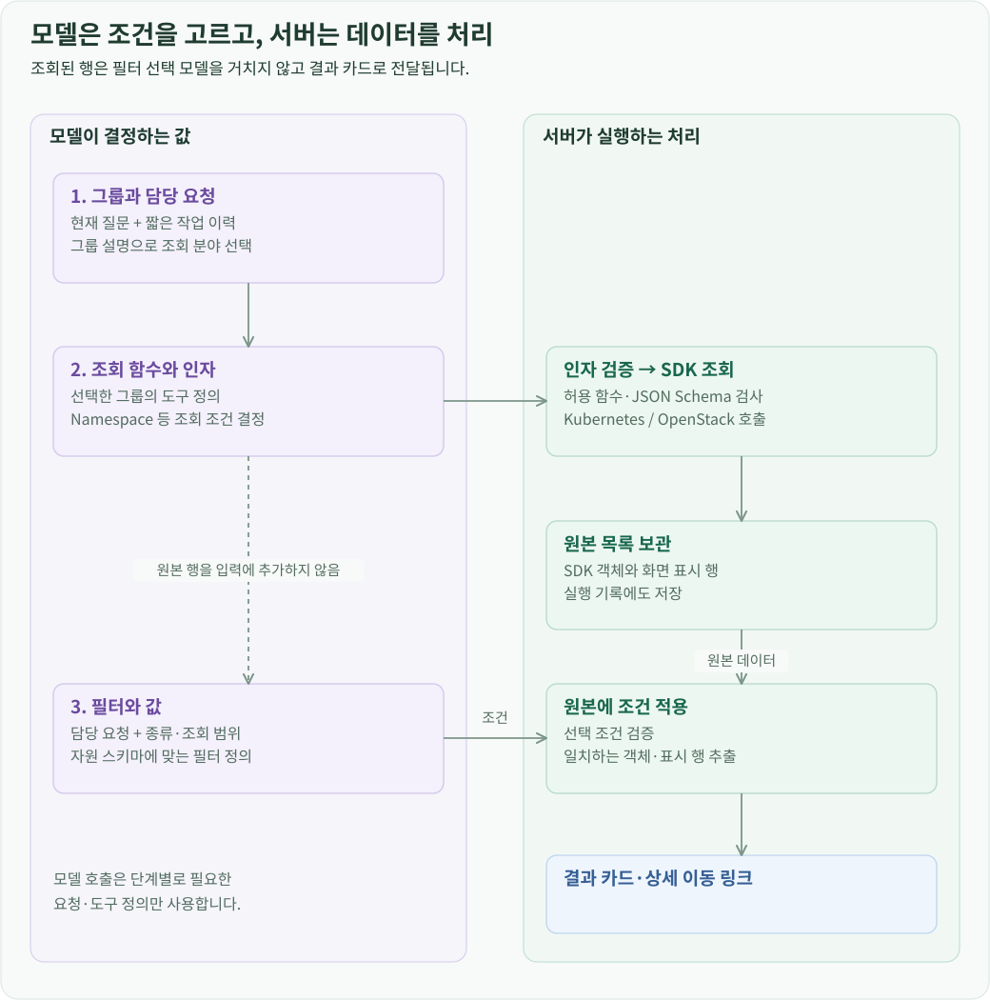
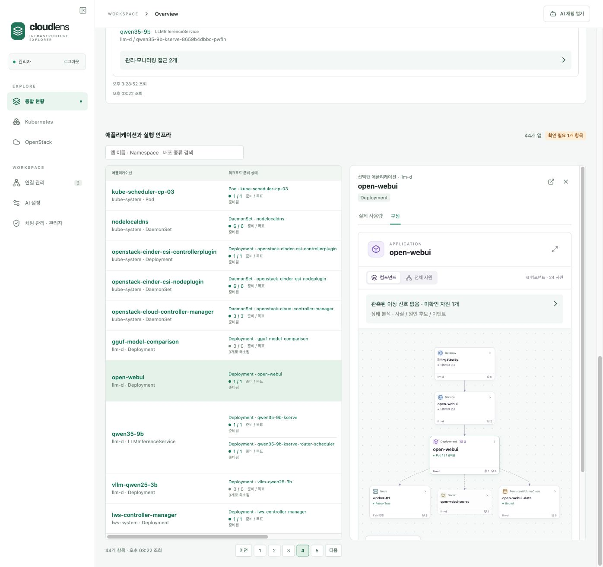
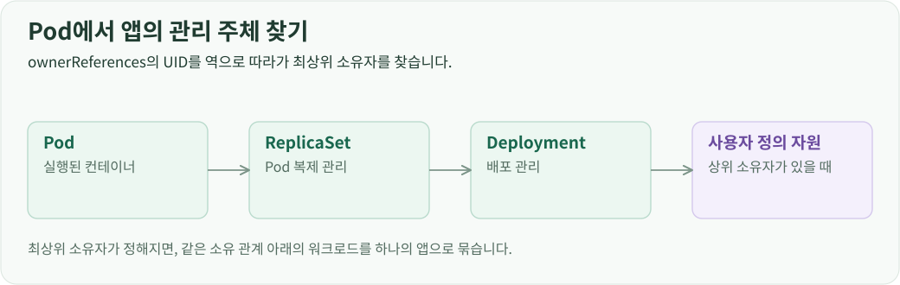

앱 하나를 보는데 두 플랫폼을 오가야 하는 문제
모델 서빙까지 구성하고 나니 운영 대상도 함께 늘었습니다. 모델 하나에도 LLMInferenceService, Deployment, Pod, Service, InferencePool, PVC와 GPU Claim이 연결되어 있었습니다. 그 Pod가 실행되는 머신은 Kubernetes의 Node이면서 OpenStack의 VM이었고, Pod의 디스크는 Cinder 볼륨이었습니다.
Horizon에서는 VM과 볼륨을 볼 수 있고 Kubernetes에서는 Pod와 Service를 볼 수 있지만, 제가 확인하고 싶은 것은 “이 앱이 어디에서 실행되고, 무엇을 사용하며, 왜 동작하지 않는가”였습니다. 앱 이름에서 시작해 이 관계를 한 번에 따라가고 싶었습니다. 그래서 직접 구축한 OpenStack·Kubernetes·Prometheus·모델 API를 연결하는 웹 애플리케이션, CloudLens를 개발했습니다.
CloudLens의 중심에는 직접 배포한 Qwen을 사용하는 AI 검색과 장애 진단을 두었습니다. 자연어로 자원과 관계를 찾고, 상태·이벤트·로그를 바탕으로 원인과 다음 행동을 확인합니다. 로그 분석과 YAML 초안 작성도 같은 모델을 활용합니다.
그다음으로 앱의 구성을 시각화하고 실행 인프라까지 추적하는 기능에 중점을 뒀습니다. 채팅으로 찾은 앱이나 통합 현황에서 선택한 앱의 구성·사용량을 보고, 연결된 자원 상세로 이동합니다. 실제 변경과 직접 조사는 자원 관리 화면과 터미널에서 이어갑니다.
자연어를 조회 함수와 필터로 바꾸기
자연어 조회는 요청에 맞는 도구와 조건을 모델이 선택하고, 서버가 실제 조회와 필터링을 수행하는 방식으로 구현했습니다. 직접 배포한 Qwen을 사용하며, 조회한 데이터는 모델이 다시 작성하지 않고 목록 카드에 표시합니다.
“Running인 Pod 보여줘”라고 요청하면 Kubernetes 도구 그룹에서 Pod 조회 함수를 선택하고, 상태 조건을 지정합니다. 서버는 그 조건을 API 조회 결과에 적용합니다. 모델에는 단계별로 필요한 도구와 조건만 전달하고 전체 조회 결과를 다시 넣지 않아, 자원이 많아져도 도구 선택에 필요한 입력이 크게 늘어나지 않도록 했습니다.

“그중에서”처럼 이전 요청을 이어 묻는 경우에는 앞서 조회한 대상과 조건을 짧게 전달합니다. “이 PVC를 쓰는 자원 찾아줘”나 “Open WebUI 구성 보여줘” 같은 요청은 관계 조회 도구로 처리합니다. 조회 결과에서 자원을 선택하면 상세 화면으로 이동할 수 있습니다.

도구를 나누는 기준과 필터·대화 이력의 처리 방식은 AI 조회 파이프라인에서 확인할 수 있습니다.
장애 진단은 상태·이벤트·로그를 읽고 원인을 연결하기
장애 진단은 앱에 연결된 자원의 설정·상태·이벤트·로그를 수집하고, 모델이 이를 대조해 원인을 찾는 방식으로 구현했습니다. 처음에는 판단에 필요한 주요 정보를 전달하고, 추가 정보가 필요하면 저장된 원본을 조회할 수 있게 했습니다.

모델은 관측된 증상과 원인 후보, 판단 근거, 추천하는 다음 행동을 함께 반환합니다. 사용자는 원인과 조치 순서를 먼저 보고, 필요할 때 해당 이벤트나 로그를 펼쳐 확인할 수 있습니다.

이미지 다운로드 실패, 설정 누락, 저장소 연결 실패 등 원인이 다른 테스트 앱으로 검증했습니다. 같은 수집 자료를 Qwen과 Sol에 전달해 비교하면서 자료 수집 문제와 모델의 해석 문제를 구분했습니다. 앱마다 정답을 지정하지 않고 동일한 수집·진단 과정으로 원인을 찾도록 했습니다.
자료 수집과 모델 호출 방식은 장애 진단 설계에서, 장애별 테스트와 모델 비교 결과는 진단 검증 사례에서 확인할 수 있습니다.
YAML 편집과 AI 초안 작성
자원 생성·수정 화면에서 요구사항을 입력하면 선택한 자원의 스키마를 참고해 AI가 YAML 초안을 작성합니다. Kubernetes 기본 자원뿐 아니라 CRD의 필드 설명도 활용합니다. 생성된 초안은 기본 템플릿과 함께 Monaco 편집기에서 직접 수정할 수 있습니다.

수정할 때는 요청한 부분만 생성해 기존 YAML에 반영합니다. 서버가 Kubernetes dry-run으로 초안을 검증하고, 사용자가 편집기에서 내용을 확인한 뒤 적용합니다.
초안 생성·수정과 적용 전 검증 방식은 자원 변경 처리에서 확인할 수 있습니다.
Pod에서 시작해 애플리케이션과 VM까지 추적하기

애플리케이션 구성은 Pod의 소유 관계를 따라 관리 주체를 찾는 방식으로 구현했습니다. 일반적인 앱은 Pod → ReplicaSet → Deployment 순서로 추적하고, KServe로 배포한 모델은 상위의 LLMInferenceService까지 확인합니다. 같은 관리 주체에 속한 워크로드를 하나의 앱으로 묶습니다.

앱을 찾으면 자원에 선언된 연결 정보를 이용해 주변 구성을 연결합니다. Service가 선택하는 Pod, 외부 요청을 전달하는 Gateway, Pod가 사용하는 PVC와 GPU 등을 찾아 구성도로 표시합니다. 앱마다 실제 사용하는 자원이 다르므로 구성도도 그에 맞게 달라집니다.

실행 인프라는 Pod가 배치된 Node를 찾고, Node에 기록된 클라우드 식별자를 OpenStack VM과 대조해 연결합니다. 사용자는 앱 구성에서 실행 노드와 VM까지 따라가며 각 자원의 상세 정보를 확인할 수 있습니다. 통합 현황과 채팅의 앱 구성 조회는 같은 연결 로직을 사용합니다.

자원별 연결 기준과 준비 상태 계산 방식은 애플리케이션 추적 설계에서 확인할 수 있습니다.
앱의 실제 사용량과 인프라의 남은 용량 보기
앱 사용량은 해당 앱에 속한 Pod와 PVC를 찾아 Prometheus 지표를 조회합니다. 같은 방식으로 개별 Pod나 컨트롤러의 사용량도 확인할 수 있습니다.

GPU는 장치 식별자와 할당 정보를 연결해 카드별 사용률·메모리 사용량과 사용하는 앱을 함께 표시합니다.

추가 배치 여유는 플랫폼의 할당 정보를 기준으로 계산합니다. OpenStack에서는 VM을 더 만들 수 있는 용량과 Cinder 저장소의 여유 공간을, Kubernetes에서는 노드별 Pod 요청량을 제외한 여유를 보여줍니다. 실제 사용량과 할당 기준의 잔여 용량을 구분해 확인할 수 있도록 했습니다.
지표별 집계 방식은 앱 사용량 대시보드에서, 플랫폼별 잔여 용량 계산은 인프라 용량에서 확인할 수 있습니다.
브라우저·서버·인프라를 연결하는 구조
React·TypeScript 화면에서 요청을 보내면 FastAPI 서버가 Kubernetes·OpenStack SDK와 모델 API를 호출합니다. 앱 관계 계산, 모니터링, AI 등은 기능별 모듈로 나눠 화면과 채팅에서 같은 처리 로직을 사용하도록 했습니다.

계정·연결 설정·채팅·AI 실행 기록은 H2에 저장합니다. 자원의 현재 상태는 Kubernetes와 OpenStack에서, 시간별 사용량은 Prometheus에서 조회합니다.
포털 서버는 Mac에서 실행하고, 관리 대상과 모델 서버는 집의 OpenStack 위에 배치했습니다. 포털이 각 서비스에 접속해 데이터를 가져오는 구조입니다.
요청 처리와 모듈 구성은 시스템 설계에서, 포털과 인프라 사이의 통신 경로는 실행 환경 구성에서 확인할 수 있습니다.
로그인한 사용자의 연결로 인프라에 접근하기
사용자는 로그인 후 kubeconfig와 clouds.yaml로 Kubernetes·OpenStack 연결을 등록합니다. 서버는 로그인한 사용자가 등록한 연결 정보로 인프라에 접근합니다. 연결 정보는 사용자별로 암호화해 저장하고, 실제 자원 작업에는 해당 인프라 계정의 권한을 적용합니다.

Kubernetes 클러스터가 어느 OpenStack에 배포됐는지도 연결 설정에 저장합니다. 이 설정으로 조회할 클라우드를 정하고, Node에 기록된 식별자로 해당 VM을 찾습니다. OpenStack을 사용하지 않는 클러스터는 Kubernetes 기능만 사용할 수 있습니다.
로그인·인증정보 저장과 접근 권한 검사는 계정과 연결 관리에서 확인할 수 있습니다.
Kubernetes 자원 탐색과 관리
Kubernetes 탐색기는 클러스터 API에서 사용 가능한 자원 종류를 읽어 메뉴를 구성합니다. Pod·Deployment 같은 기본 자원과 설치된 CRD를 같은 방식으로 탐색하고, API가 제공하는 목록 정보를 공통 테이블에 표시합니다.

상세 화면에서는 설정과 이벤트, 연결된 자원을 확인합니다. Pod·워크로드에는 사용량 대시보드를, Pod에는 로그와 터미널을 제공합니다. 연결된 자원을 선택하면 상세 화면으로 이동할 수 있어, 실행 중인 Pod에서 상위 Deployment나 Node를 바로 확인할 수 있습니다.

자원 상태가 바뀌면 서버가 Kubernetes watch로 변경을 감지해 브라우저에 전달합니다. 사용자가 매번 새로고침하지 않아도 추가·수정·삭제된 항목이 목록에 반영됩니다.
자원 탐색과 목록 갱신 방식은 자원 관리 설계에서 확인할 수 있습니다.
OpenStack 자원 탐색과 일괄 작업
OpenStack 탐색기는 서비스 카탈로그와 SDK 자원 정의를 이용해 사용 가능한 자원을 구성합니다. 인스턴스·볼륨·네트워크 등을 조회하고, VM 상세에서 연결된 볼륨·포트·보안 그룹으로 이동할 수 있습니다.

생성과 수정에는 자원별 입력 폼을 사용합니다. VM을 만들 때는 이미지·Flavor·네트워크·키 페어의 실제 목록을 가져오고, 사용자가 고른 값을 OpenStack API 요청으로 변환합니다.

Kubernetes와 OpenStack 모두 여러 자원을 선택해 일괄 작업할 수 있습니다. 서버는 대상별 실행 조건을 확인한 뒤 API에 요청을 보내고, 각 요청의 접수·실패 결과를 기록합니다. 이후 목록을 갱신해 실제 자원 상태를 표시합니다. OpenStack은 주기적으로 상태를 조회하며, 작업 직후에는 조회 간격을 줄여 변경을 빠르게 반영합니다.
입력 검증과 일괄 작업의 처리 방식은 자원 변경 처리에서 확인할 수 있습니다.
로그에서 터미널까지 조사 흐름 이어가기
로그 화면에서는 현재 로그와 재시작 전 로그를 확인하고, AI 분석을 요청할 수 있습니다. 분석 시점의 로그를 고정해 모델에 전달하고, 확인된 사실·원인 후보·다음 확인 사항을 원문과 대조할 수 있도록 했습니다.

직접 접속하는 방식은 대상에 따라 구분했습니다.
- Pod 터미널: Kubernetes exec로 선택한 컨테이너의 셸을 실행하고, 입출력을 WebSocket으로 브라우저에 전달합니다.
- VM SSH: CloudLens 서버가 저장된 개인키로 VM에 SSH 접속한 뒤, 입출력을 브라우저에 전달합니다. SSH 연결에는 Paramiko를 사용합니다.
- VM 콘솔: OpenStack이 발급한 noVNC 주소를 브라우저에서 열어 부팅 화면과 OS 로그인 화면을 확인합니다.

사용자는 포털에서 키 페어를 선택해 VM을 생성하고, 저장한 개인키로 브라우저에서 SSH에 접속할 수 있습니다. 각 접속 방식의 인증과 중계 경로는 로그·터미널·콘솔 연결에서 확인할 수 있습니다.
모델 설정·디버깅·사용량을 운영 기능으로 만들기
모델 호출은 OpenAI 호환 API와 Codex exec를 공통 인터페이스로 연결했습니다. 직접 배포한 Qwen을 주 모델로 사용하고, Codex는 같은 입력을 다른 모델과 비교하는 데 사용합니다. AI 설정에서 모델과 입출력 한도를 선택하면 채팅·진단·로그 분석·YAML 작성에 공통으로 적용합니다.

AI 답변이 잘못됐을 때 문제가 발생한 단계를 찾을 수 있도록, 사용자 요청부터 모델 호출·도구 실행·최종 결과까지 하나의 실행 기록으로 연결했습니다. 사용한 모델과 실제 입력·응답, 도구 인자와 실행 결과를 저장합니다.

예를 들어 Deployment를 요청했는데 Pod가 나왔다면 요청 해석과 도구 선택, 실제 조회 결과를 순서대로 확인해 대상이 바뀐 지점을 찾을 수 있습니다. 관리자는 사용자·기능·모델별로 실행 기록을 검색할 수 있습니다.

입력·출력 토큰은 모델 제공자가 반환한 사용량을 기록해 사용자별로 집계합니다. 한 요청에서 모델을 여러 번 호출하면 각 호출의 사용량을 남깁니다.

답변 평가도 실행 기록에 연결하고, 평가와 입력·응답을 추출해 모델 비교나 파인튜닝 자료로 활용할 수 있도록 했습니다. 단계별 저장 항목과 토큰 집계 방식은 AI 실행 추적과 평가 데이터에서 확인할 수 있습니다.